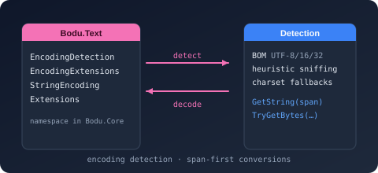

Bodu.Text

Bodu.Text is the text-encoding helpers namespace of the Bodu suite. It is not a package of its own — the namespace ships inside the Bodu.Core package and is part of the Core Foundations topic, alongside the collections, pooled buffers, and guard helpers it shares an assembly with. It sits directly on top of the BCL Encoding contract and adds the ergonomic, allocation-aware surface the BCL leaves out: byte-order-mark detection, span- and UTF-8-friendly transcoding, preamble handling, pooled-buffer conversions, and validation.
Unlike Bodu.Text.Encoding — which implements binary-to-text codecs such as Base16/32/64/85 — Bodu.Text is concerned with character encodings: turning bytes into text and back through System.Text.Encoding, correctly and efficiently.
Namespaces and headline types
Bodu.Text
| Type | Purpose |
|---|---|
| EncodingDetection | BOM-based heuristics for detecting which System.Text.Encoding produced a byte sequence — the five canonical Unicode preambles (UTF-8, UTF-16 LE/BE, UTF-32 LE/BE), with non-allocating TryDetectByPreamble. |
| EncodingExtensions | Span-, UTF-8-, and IBufferWriter<byte>-friendly extensions on System.Text.Encoding — encode, decode, transcode, preamble inspection, classification, and validation, including pooled and chunked overloads. |
| StringEncodingExtensions | Encoding-aware extensions on string / ReadOnlySpan<char> — ToBytes, ToUtf8Bytes, pooled conversions, preamble emission, and Try* write-to-span overloads. |
Design choices
A few conventions hold across the whole surface:
- Span-first, UTF-8-first. Every operation has overloads over
ReadOnlySpan<char>/ReadOnlySpan<byte>, plus UTF-8 fast paths (ToUtf8Bytes,EncodeUtf8To,GetUtf8ByteCount) for the dominant wire encoding, so the common cases avoid intermediate allocations entirely. - Pooled and owned-memory variants. Where a result buffer must outlive the call, the surface offers
ArrayPool<byte>-backed conversions (GetUtf8BytesPooled,GetCharsPooled, both returning a disposable PooledBufferBuilder<T>) andIMemoryOwner<byte>overloads (GetBytesOwner) so the caller controls the buffer's lifetime instead of forcing a fresh array per call. Try*for the non-throwing path. Detection (TryDetectByPreamble) and write-to-span operations (TryEncodeUtf8To,TryEncodeTo) follow the BCLTrypattern — aboolresult plus anoutvalue, no exception on the failure path.- Incremental work reports
OperationStatus. The chunked transcoding surface (EncodeChunk/DecodeChunk) returns OperationStatus (Done,DestinationTooSmall,NeedMoreData,InvalidData) so a caller can drive a pull-based loop with explicit backpressure rather than guessing buffer sizes. - Validation is explicit and configurable. Fallback behavior on malformed input is switched per call site —
WithExceptionFallbacks()for strict throw-on-invalid decoding,WithReplacementFallbacks()to substitute U+FFFD — without mutating a sharedEncodinginstance, and dedicated validation overloads confirm a byte span is well-formed for an encoding before you trust it.
A first sample — detect an encoding from its BOM
The headline scenario: read a file of unknown provenance, identify its encoding from the byte-order mark, and decode without leaking the preamble into the text.
using Bodu.Text;
byte[] bytes = File.ReadAllBytes("settings.txt");
System.Text.Encoding encoding =
EncodingDetection.TryDetectByPreamble(bytes, out System.Text.Encoding? detected)
? detected
: System.Text.Encoding.UTF8; // sensible default when there is no BOM
string text = encoding.GetStringSkippingPreamble(bytes);
TryDetectByPreamble is non-allocating and recognizes the five canonical Unicode preambles; GetStringSkippingPreamble decodes the payload while ignoring a leading BOM, so the result never starts with a stray U+FEFF.
Going the other way — string to bytes — is equally direct, with a pooled variant for hot paths:
using Bodu.Buffers;
using Bodu.Text;
byte[] utf8 = "héllo".ToUtf8Bytes(); // UTF-8, no BOM
using PooledBufferBuilder<byte> pooled = "héllo".GetUtf8BytesPooled(); // ArrayPool-backed
Scenarios this library covers
| Scenario | Reach for |
|---|---|
| Detect a file's encoding from its byte-order-mark | EncodingDetection.TryDetectByPreamble(bytes, out var encoding) |
| Decode bytes, skipping any leading preamble | encoding.GetStringSkippingPreamble(bytes) |
| Convert a string to bytes without intermediate allocations | value.ToUtf8Bytes() / value.GetUtf8BytesPooled() |
| Encode straight into a caller-supplied span or pipeline | value.EncodeUtf8To(destination) / value.TryEncodeUtf8To(...) / value.WriteUtf8To(bufferWriter) |
| Inspect or strip a preamble by hand | encoding.HasPreamble() / encoding.StartsWithPreamble(bytes) / encoding.StripPreamble(bytes) |
| Classify an encoding (UTF-8 / UTF-16 / UTF-32, endianness) | encoding.IsUtf8() / encoding.IsAnyUtf() / encoding.IsUtf16LittleEndian() |
| Switch between strict and replacing decode behavior | encoding.WithExceptionFallbacks() / encoding.WithReplacementFallbacks() |
| Transcode between two encodings over spans | EncodingExtensions transcode overloads |
| Transcode a large payload incrementally with backpressure | encoding.EncodeChunk(...) / DecodeChunk(...) returning OperationStatus |
| Validate that a byte span is well-formed for an encoding | EncodingExtensions validation overloads |
Bodu.Text vs. Bodu.Text.Encoding
The names are similar; the jobs are not.
Bodu.Text (this namespace, in Bodu.Core) |
Bodu.Text.Encoding (separate package) |
|
|---|---|---|
| Concern | Character encodings — bytes ↔ text through System.Text.Encoding |
Binary-to-text codecs — arbitrary bytes ↔ a printable alphabet |
| Typical input | A file, stream, or buffer that is text in some encoding | Binary data (hashes, keys, payloads) that must travel as text |
| Headline operations | BOM detection, preamble handling, transcoding, validation | Base16 / Base32 / Base58 / Base64 / Base85 encode and decode |
If you are deciding between this namespace, the binary codecs, and the document formats / serializers, the Text & Serialization topic overview maps the full triangle.
Where to go next
- Bodu.Core introduction — the host package: collections, pooled buffers,
ThrowHelper, and the rest of the assembly this namespace ships in. - Core Foundations topic overview — where
Bodu.Textsits in the foundation layer. - Core Foundations concepts — topic-level vocabulary, including a dedicated character-encoding section (preamble, transcoding, validation, span-first surfaces).
- Encoding helpers and BOM detection guide — worked patterns for every surface above.
- Bodu.Text.Encoding introduction — the sibling package for binary-to-text codecs (Base16/32/58/64/85).
- Cross-library getting started — install commands across the suite; the
Bodu.Textwalk-through itself is the encoding helpers guide above. - Bodu.Text API reference — full type-by-type docs.